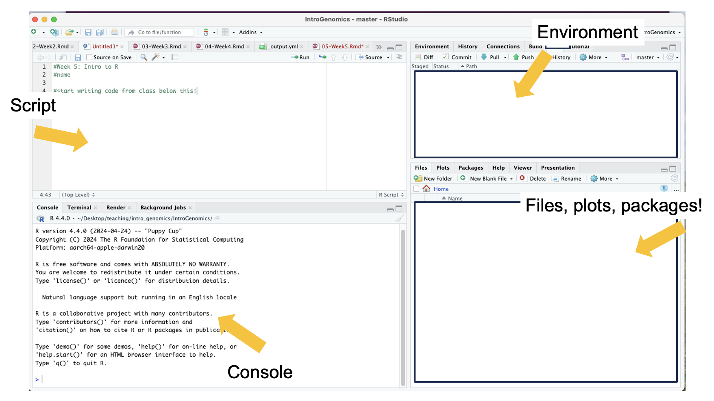
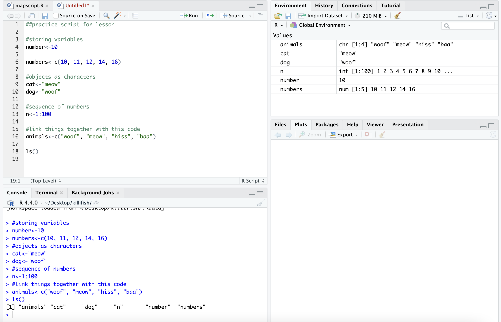

6 Week 5- Welcome to the R environment!
This lesson is modified from materials compiled by Serena Caplins from the STEMinist_R lessons produced by several UC Davis graduate student and which can be found here. The lecture slides to introduce R more in depth are here: Week 5 Slides)
6.1 Main Objectives
- Learn how to use Rstudio through FarmOnDemand
- Understand the different parts of the Rstudio window
- Learn how to work with objects in R and general R operations
- Learn how to manipulate data and explore a dataframe
6.2 Orientation to R
First let’s navigate to our R studio on Farm OnDemand! Launch your session with the information shown below: Give yourself 2 for memory.
After we start it up we will want to create a new file called “Week5-IntroR.R” to type our scripts for today.
To do this, we will click File, New File then R script. Name your
file with your name-Week5-introR
# before a sentence comments out what you want before you write code.
Without a # R will think what you are writing needs to be run as a
command! I have used comments in this example to write what the script is for. The top left is the script, the bottom left is the terminal window where code and outputs will be typed, the top right is your environment

R can be used for basic arithmetic. Type this into your script and hit
enter:
## [1] 38It can also store values in variables:
You can assign an object using an assignment operator <- or =.
You can see your assigned object by typing the name you gave it.
## [1] 10## [1] 10 11 12 14 16Objects can be numbers or characters:
We can use colons to get sequences of numbers:
Data Structures include:
Vector
Lists
Matrices
Factor
Data frame
Vectors can also include characters (in quotes): c()=concatenate, aka
link things together!
6.3 Manipulating a vector object
We can get summaries of vectors with summary()
## Min. 1st Qu. Median Mean 3rd Qu. Max.
## 1.00 25.75 50.50 50.50 75.25 100.00We can see how long a vector is with length()
## [1] 100You can use square brackets [] to get parts of vectors.
## [1] 50Class Exercise
- What is the 2nd entry in our vector animals?
create a new vector with the following code for different field sites to answer questions 2 & 3:
site_code <- c("BB","ShC","BH","Pes","StC","MR","PV","KH","CM","RP","Car","SR","RM","Dav","JB","Mal","PB","PA","Leu","VD","A")
- Without counting, which site is the 10th entry?
- How many sites are there total?
6.4 Operations act on each element of a vector:
## [1] 12 13 14 16 18## [1] 20 22 24 28 32## [1] 12.6## [1] 100 121 144 196 256## [1] 636.6 A few tips below for working with objects:
We can keep track of what objects R is using, with the functions ls()
and objects()
## [1] "animals" "cat" "dog" "n" "number" "numbers"
## [7] "site_code" "y"objects() #returns the same results as ls() in this case. because we only have objects in our environment.## [1] "animals" "cat" "dog" "n" "number" "numbers"
## [7] "site_code" "y"This is where those objects show up with you type ls(): 
# how to get help for a function; you can also write help()
?ls
# you can get rid of objects you don't want
rm(numbers)
# and make sure it got rid of them
ls()## [1] "animals" "cat" "dog" "n" "number" "site_code"
## [7] "y"Call the help files for the functions ls() and rm() + What are the arguments for the ls() function? + What does the ‘sorted’ argument do?
From the help file: sorted is a logical indicating if the resulting character should be sorted alphabetically. Note that this is part of ls() may take most of the time.
6.7 Characterizing a dataframe
We’ll now move from working with objects and vectors to working with dataframes:
- Here are a few useful functions! I will go over each as we introduce
them throughout the lesson today:
- install.packages()
- library()
- data()
- str()
- dim()
- colnames() and rownames()
- class()
- as.factor()
- as.numeric()
- unique()
- t()
- max(), min(), mean() and summary()
We’re going to use data on sleep patterns in mammals. This requires installing a package (ggplot2) and loading the data
Install the package ggplot2. This only has to be done once and after
installation we should then comment out the command to install the
package with a #.
Load the data (it’s called msleep). This dataset includes information bout mammal sleep times and weights that was taken from a study by V. M. Savage and G. B. West. “A quantitative, theoretical framework for understanding mammalian sleep. Proceedings of the National Academy of Sciences, 104 (3):1051-1056, 2007.”
The data includes name (common name), genus, vore (carnivore,
omnivore, etc), order, conservation (status), sleep_total (total
amount of sleep in hours), sleep_rem (rem sleep in hours),
sleep_cycle (length of sleep cycle, in hours), awake (amount of time
spent awake, in hours), brainwt (brain weight in kilograms) and
bodywt (body weight in kilograms)
There are many functions in R that allow us to get an idea of what the data looks like. For example, what are it’s dimensions (how many rows and columns)?
# head() -look at the beginning of the data file
# tail() -look at the end of the data file
head(msleep)## # A tibble: 6 × 11
## name genus vore order conservation sleep_total sleep_rem sleep_cycle awake
## <chr> <chr> <chr> <chr> <chr> <dbl> <dbl> <dbl> <dbl>
## 1 Cheetah Acin… carni Carn… lc 12.1 NA NA 11.9
## 2 Owl mo… Aotus omni Prim… <NA> 17 1.8 NA 7
## 3 Mounta… Aplo… herbi Rode… nt 14.4 2.4 NA 9.6
## 4 Greate… Blar… omni Sori… lc 14.9 2.3 0.133 9.1
## 5 Cow Bos herbi Arti… domesticated 4 0.7 0.667 20
## 6 Three-… Brad… herbi Pilo… <NA> 14.4 2.2 0.767 9.6
## # ℹ 2 more variables: brainwt <dbl>, bodywt <dbl>## # A tibble: 6 × 11
## name genus vore order conservation sleep_total sleep_rem sleep_cycle awake
## <chr> <chr> <chr> <chr> <chr> <dbl> <dbl> <dbl> <dbl>
## 1 Tenrec Tenr… omni Afro… <NA> 15.6 2.3 NA 8.4
## 2 Tree s… Tupa… omni Scan… <NA> 8.9 2.6 0.233 15.1
## 3 Bottle… Turs… carni Ceta… <NA> 5.2 NA NA 18.8
## 4 Genet Gene… carni Carn… <NA> 6.3 1.3 NA 17.7
## 5 Arctic… Vulp… carni Carn… <NA> 12.5 NA NA 11.5
## 6 Red fox Vulp… carni Carn… <NA> 9.8 2.4 0.35 14.2
## # ℹ 2 more variables: brainwt <dbl>, bodywt <dbl>## tibble [83 × 11] (S3: tbl_df/tbl/data.frame)
## $ name : chr [1:83] "Cheetah" "Owl monkey" "Mountain beaver" "Greater short-tailed shrew" ...
## $ genus : chr [1:83] "Acinonyx" "Aotus" "Aplodontia" "Blarina" ...
## $ vore : chr [1:83] "carni" "omni" "herbi" "omni" ...
## $ order : chr [1:83] "Carnivora" "Primates" "Rodentia" "Soricomorpha" ...
## $ conservation: chr [1:83] "lc" NA "nt" "lc" ...
## $ sleep_total : num [1:83] 12.1 17 14.4 14.9 4 14.4 8.7 7 10.1 3 ...
## $ sleep_rem : num [1:83] NA 1.8 2.4 2.3 0.7 2.2 1.4 NA 2.9 NA ...
## $ sleep_cycle : num [1:83] NA NA NA 0.133 0.667 ...
## $ awake : num [1:83] 11.9 7 9.6 9.1 20 9.6 15.3 17 13.9 21 ...
## $ brainwt : num [1:83] NA 0.0155 NA 0.00029 0.423 NA NA NA 0.07 0.0982 ...
## $ bodywt : num [1:83] 50 0.48 1.35 0.019 600 ...dim(), ncol(), nrow()- dimensions, number of columns, number of rows colnames(), rownames() - column names, row names
Rstudio also allows us to just look into the data file with View().
Try to look at the msleep data using View(msleep)
6.8 How to access parts of the data:
We can also look at a single column at a time. There are three ways to access this: $, [,#] or [,“a”].
Think about “Remote Control car” to remember that [5,] means fifth row and [,5] means fifth column! Rows are listed first and columns are listed second.
Each way has it’s own advantages! The first subsets the third column of
data, so you need to know where your data of interest is. The second
subsets the vore column only. The third prints all of the data from
the vore column in your console window.
## # A tibble: 83 × 1
## vore
## <chr>
## 1 carni
## 2 omni
## 3 herbi
## 4 omni
## 5 herbi
## 6 herbi
## 7 carni
## 8 <NA>
## 9 carni
## 10 herbi
## # ℹ 73 more rows## # A tibble: 83 × 1
## vore
## <chr>
## 1 carni
## 2 omni
## 3 herbi
## 4 omni
## 5 herbi
## 6 herbi
## 7 carni
## 8 <NA>
## 9 carni
## 10 herbi
## # ℹ 73 more rows## [1] "carni" "omni" "herbi" "omni" "herbi" "herbi" "carni"
## [8] NA "carni" "herbi" "herbi" "herbi" "omni" "herbi"
## [15] "omni" "omni" "omni" "carni" "herbi" "omni" "herbi"
## [22] "insecti" "herbi" "herbi" "omni" "omni" "herbi" "carni"
## [29] "omni" "herbi" "carni" "carni" "herbi" "omni" "herbi"
## [36] "herbi" "carni" "omni" "herbi" "herbi" "herbi" "herbi"
## [43] "insecti" "herbi" "carni" "herbi" "carni" "herbi" "herbi"
## [50] "omni" "carni" "carni" "carni" "omni" NA "omni"
## [57] NA NA "carni" "carni" "herbi" "insecti" NA
## [64] "herbi" "omni" "omni" "insecti" "herbi" NA "herbi"
## [71] "herbi" "herbi" NA "omni" "insecti" "herbi" "herbi"
## [78] "omni" "omni" "carni" "carni" "carni" "carni"If you wanted to save these as objects, you need to add an arrow an a new name for that object. They should all be the same!
column3<-msleep[,3]
voreonly<-msleep[, "vore"]
vores<-msleep$vore
head(column3) #do this or View() for all of your new objects!## # A tibble: 6 × 1
## vore
## <chr>
## 1 carni
## 2 omni
## 3 herbi
## 4 omni
## 5 herbi
## 6 herbiIt’s important to know the class of data if you want to manipulate it.
For example, you can’t add characters. msleep contains several
different types of data. We see with str() that there are columns of
data that are characters and numeric.
Data Types/Classes:
Character (names)
Numeric (numbers)
Logical (T/F)
Integer (2L for example)
Complex (imaginary #s)
Raw (not really used)
## [1] "character"## [1] "numeric"We can also look at a single row at a time. There are two ways to access this:
- by indicating the row number in square brackets next to the
name of the dataframe
name[#,] - by calling the actual name of the row (if your rows have names)
name["a",].
## # A tibble: 1 × 11
## name genus vore order conservation sleep_total sleep_rem sleep_cycle awake
## <chr> <chr> <chr> <chr> <chr> <dbl> <dbl> <dbl> <dbl>
## 1 Little… Myot… inse… Chir… <NA> 19.9 2 0.2 4.1
## # ℹ 2 more variables: brainwt <dbl>, bodywt <dbl>## # A tibble: 1 × 11
## name genus vore order conservation sleep_total sleep_rem sleep_cycle awake
## <chr> <chr> <chr> <chr> <chr> <dbl> <dbl> <dbl> <dbl>
## 1 Mounta… Aplo… herbi Rode… nt 14.4 2.4 NA 9.6
## # ℹ 2 more variables: brainwt <dbl>, bodywt <dbl>
We can select more than one row or column at a time:
## # A tibble: 83 × 2
## name sleep_total
## <chr> <dbl>
## 1 Cheetah 12.1
## 2 Owl monkey 17
## 3 Mountain beaver 14.4
## 4 Greater short-tailed shrew 14.9
## 5 Cow 4
## 6 Three-toed sloth 14.4
## 7 Northern fur seal 8.7
## 8 Vesper mouse 7
## 9 Dog 10.1
## 10 Roe deer 3
## # ℹ 73 more rowsBut what if we actually care about how many unique things are in a column?
## # A tibble: 19 × 1
## order
## <chr>
## 1 Carnivora
## 2 Primates
## 3 Rodentia
## 4 Soricomorpha
## 5 Artiodactyla
## 6 Pilosa
## 7 Cingulata
## 8 Hyracoidea
## 9 Didelphimorphia
## 10 Proboscidea
## 11 Chiroptera
## 12 Perissodactyla
## 13 Erinaceomorpha
## 14 Cetacea
## 15 Lagomorpha
## 16 Diprotodontia
## 17 Monotremata
## 18 Afrosoricida
## 19 Scandentia##
## Afrosoricida Artiodactyla Carnivora Cetacea Chiroptera
## 1 6 12 3 2
## Cingulata Didelphimorphia Diprotodontia Erinaceomorpha Hyracoidea
## 2 2 2 2 3
## Lagomorpha Monotremata Perissodactyla Pilosa Primates
## 1 1 3 1 12
## Proboscidea Rodentia Scandentia Soricomorpha
## 2 22 1 5 # levels(), if class is factor (and if not we can make it a factor) showing the way that the data is displayed
levels(as.factor(msleep$order))## [1] "Afrosoricida" "Artiodactyla" "Carnivora" "Cetacea"
## [5] "Chiroptera" "Cingulata" "Didelphimorphia" "Diprotodontia"
## [9] "Erinaceomorpha" "Hyracoidea" "Lagomorpha" "Monotremata"
## [13] "Perissodactyla" "Pilosa" "Primates" "Proboscidea"
## [17] "Rodentia" "Scandentia" "Soricomorpha"6.9 Data Manipulation
If your data is transposed in a way that isn’t useful to you, you can switch it. Note that this often changes the class of each column!
In R, all entries within a column must have the same format to be interpreted :
## chr [1:11, 1:83] "Cheetah" "Acinonyx" "carni" "Carnivora" "lc" "12.1" NA ...
## - attr(*, "dimnames")=List of 2
## ..$ : chr [1:11] "name" "genus" "vore" "order" ...
## ..$ : NULLOften we want to summarize data. There are many ways of doing this in R:
## [1] 10.43373## [1] 19.9## [1] 1.9## Min. 1st Qu. Median Mean 3rd Qu. Max.
## 1.90 7.85 10.10 10.43 13.75 19.90Sometimes, the values we care about aren’t provided in a data set. When this happens, we can create a new column that contains the values we’re interested in:
# what if what we cared about was our sleep_total/sleep_rem ratio?
# add a sleep_total/sleep_rem ratio column to our msleep dataframe with $
msleep$total_rem<-msleep$sleep_total/msleep$sleep_rem
# look at our dataframe again. It now contains 12 columns, one of them being the one we just created.
head(msleep)## # A tibble: 6 × 12
## name genus vore order conservation sleep_total sleep_rem sleep_cycle awake
## <chr> <chr> <chr> <chr> <chr> <dbl> <dbl> <dbl> <dbl>
## 1 Cheetah Acin… carni Carn… lc 12.1 NA NA 11.9
## 2 Owl mo… Aotus omni Prim… <NA> 17 1.8 NA 7
## 3 Mounta… Aplo… herbi Rode… nt 14.4 2.4 NA 9.6
## 4 Greate… Blar… omni Sori… lc 14.9 2.3 0.133 9.1
## 5 Cow Bos herbi Arti… domesticated 4 0.7 0.667 20
## 6 Three-… Brad… herbi Pilo… <NA> 14.4 2.2 0.767 9.6
## # ℹ 3 more variables: brainwt <dbl>, bodywt <dbl>, total_rem <dbl>6.10 Group Work Activity: practice exploring a dataframe

We’ll use the built-in ‘iris’ dataset. the command: data(iris) # this
loads the ‘iris’ dataset. You can view more information > about this
dataset with help(iris) or ?iris This dataset
was published by Ronald Fisher in his 1936 paper: “The use of multiple
measurements in taxonomic problems”. It has three plant species (setosa,
virginica, versicolor) and four morphological traits measured for each
sample in centimeters: Sepal.Length, Sepal.Width, Petal.Length and
Petal.Width. It is important to acknowledge that the field of genetics has been built on eugenics, and Fisher was a prominent geneticist and eugenicist. More information about this can be accessed here: https://www.ucl.ac.uk/biosciences/gee/ucl-centre-computational-biology/ronald-aylmer-fisher-1890-1962
Include copied text from your R script that is
relevant to the questions below in your submission and answers to the
following questions. Remember you can work in groups but everything is
submitted individually. Go back to the iris dataset, which can be loaded
with data(iris) and submit code and answers for the following
questions:
- How many rows are in the dataset? What are three distinct ways to figure this out?
- How many species of flowers are in the dataset? What class is ‘iris’ ?
- How many columns does this data frame have? What are their names?
- What class did R assign to each column?
- Now for writing your own commands. Assign the first flower’s petal’s width and length to new objects called setosa1.petalwidth and setosa1.petallength. Then Calculate the approximate area of the petal of the first flower, setosa1 (assume petal area can be approximated by a rectangle).
- Next, calculate the petal area of each flower in the iris dataset and assign this to a new column named PetalArea.
- What is the maximum sepal length of the irises? What about the minimum, median and average sepal length among all flowers in the dataset?
Reminder of those useful commands: dataframename[row , col], str(), dim(), nrow(), unique(), length(), rownames(), summary(), min(), max(), mean(), range(), levels(), factor(), as.factor(), class(), ncol(), nrow(), table(), sum(), quantile(), var()
6.11 Key Points
- Useful functions such as
install.packages(),library()can help us upload packages and data from R, while other functions such asstr(),dim(), andunique()can help us investigate dataframes - To look at our data we can use several commands, including
view()ordata$columnofinterestif you only want to look at one variable. - Manipulating data in R can be extremely helpful in the analysis
stage, and we can get data on
mean(),min(),max(), andsummary()data on different variables of interest